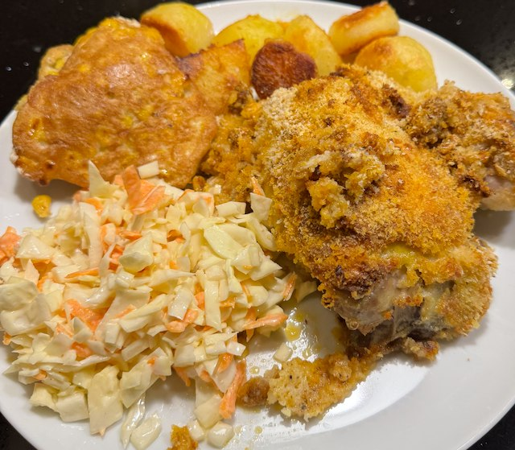
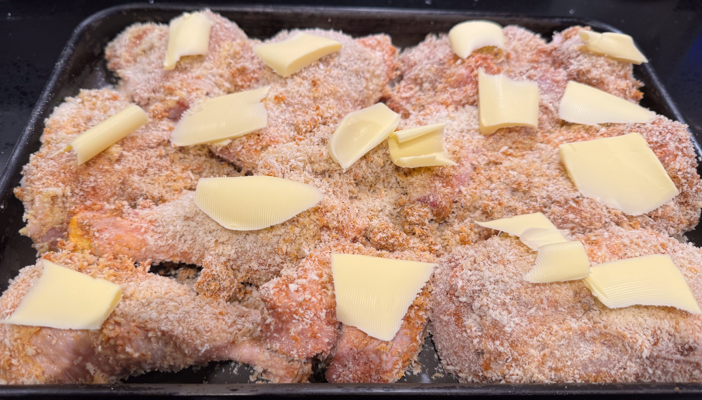
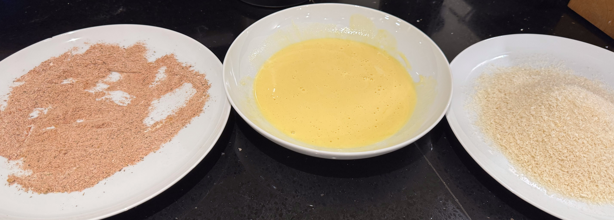

Serves: 4
Cook Time: 1 hour 15 min
Southern Fried Chicken

Proper southern friend chicken is deep fried, but that scares me so this is a version cooked in the oven. The oven style cooking is from Delia Smiths Complete Cookery Course and the spice mix from reddit. Serve with roast potatoes, sweetcorn fritters and coleslaw.
Ingredients
- 1 chicken, cut into legs, thighs, breast and wings
- salt
- Flour mix
- 2 tbsp flour
- 1 tbsp smoked paprika
- 1 tsp ground ginger
- ½ tsp dried thyme
- ½ tsp dried basil
- ½ tsp dried oregano
- ½ tsp celery salt
- ¼ tsp black pepper
- Egg mix
- 2 egg yolks
- 3 tbsp double cream
- 1 tbsp dijon mustard
- Bread Crumbs
- 80g panko breadcrumbs
- butter
Method
Get setup with a plate of the flour mix, a bowl of the egg mix, and a plate of breadcrumbs.
Salt the chicken, then coat in the flour mix, then egg mix, then the breadcrumbs. Put all the bits on an oven tray, and cut a dob of butter onto each piece.
Cook in oven on 190°C fan for 45 min.


